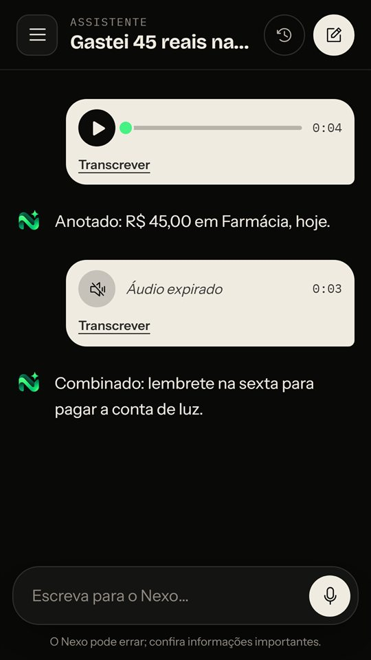
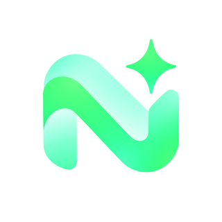
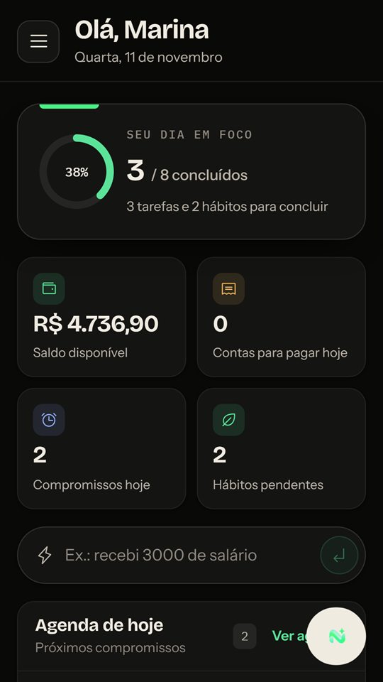
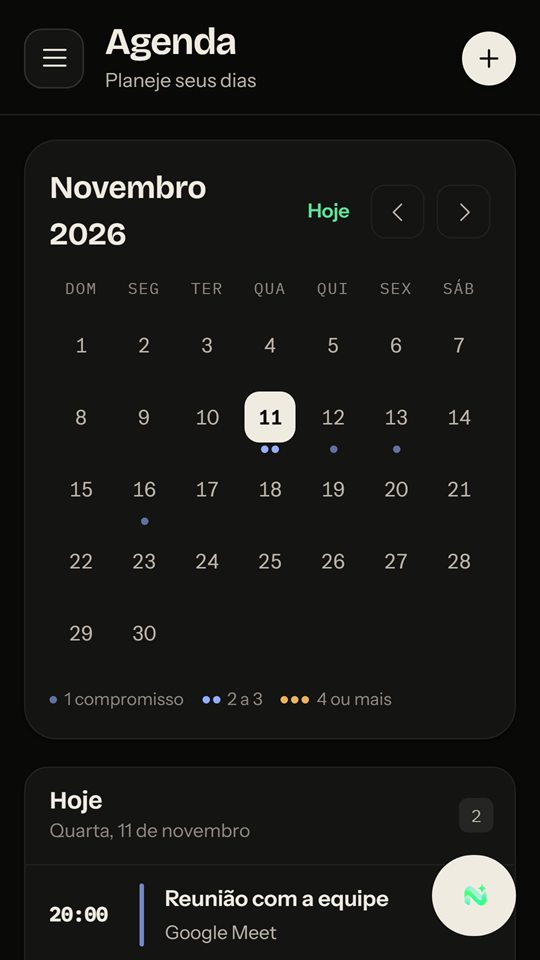
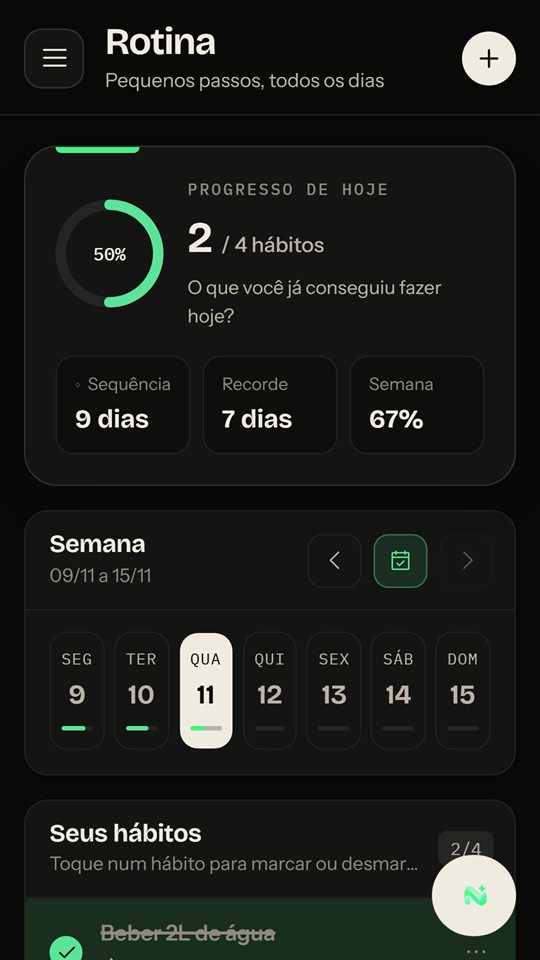
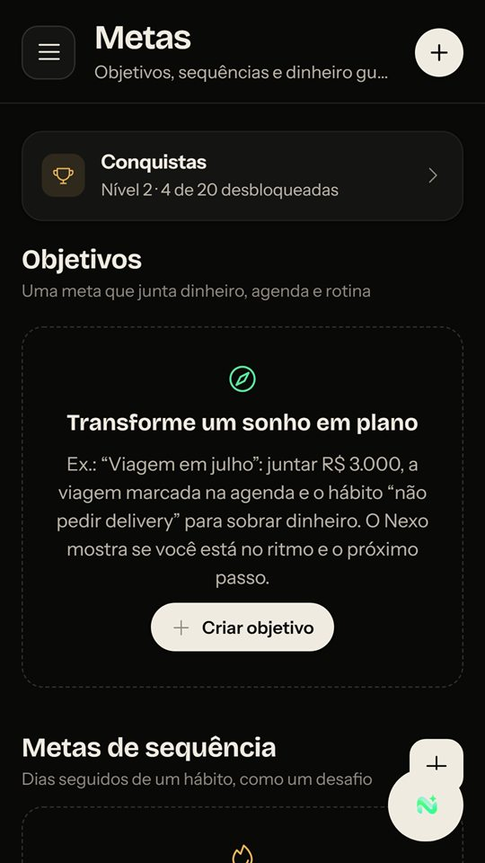
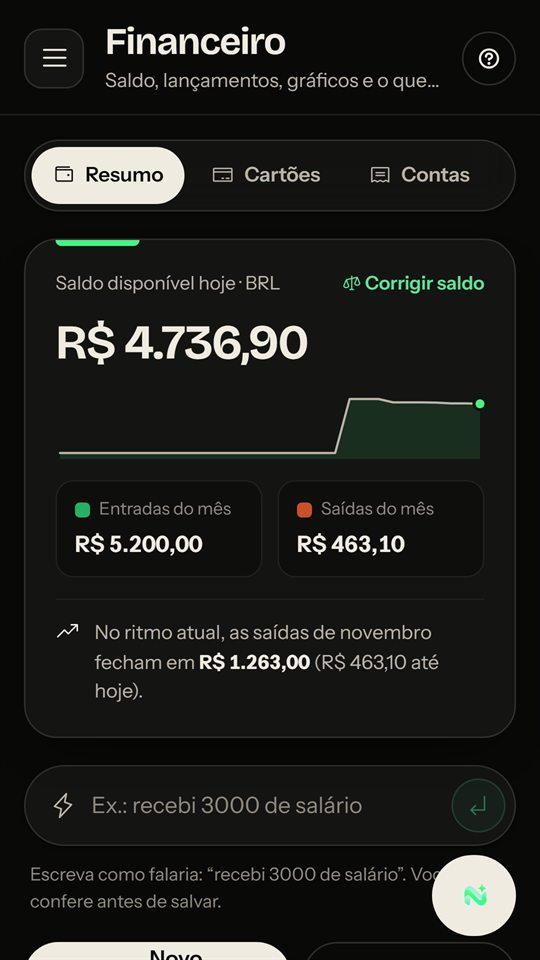

Assistente
Fale do jeito que for mais fácil.
Conversa por texto, mensagem de áudio ou chamada de voz. Na tela, um áudio vira um gasto anotado e um lembrete para pagar a conta de luz.

Desenvolvedor de sistemas · Piracicaba, SP
Estudo Desenvolvimento de Sistemas no SENAI e criei o Nexo, um assistente pessoal com IA que já passou de 3 mil usuários cadastrados.
Procurando estágio ou vaga júnior
Estudo Desenvolvimento de Sistemas no SENAI e me formo em 2026. Com o Nexo, coloquei no ar um produto completo, com telas, banco de dados e assinaturas, e o app Android já está em teste fechado na Google Play. Quero levar essa prática para uma equipe, num estágio ou vaga júnior, e continuar aprendendo.
Meu melhor projeto

Um assistente pessoal com IA que organiza a vida num app só: conversa, agenda, rotina, metas e dinheiro.
Em números
3.000
usuários cadastrados no Nexo
O que ele faz
Assistente
Conversa por texto, mensagem de áudio ou chamada de voz. Na tela, um áudio vira um gasto anotado e um lembrete para pagar a conta de luz.

Meu dia
Saldo, contas que vencem, compromissos, hábitos e tarefas de hoje, com o progresso do dia em destaque.

Agenda e tarefas
Agenda do mês e lista de tarefas no mesmo lugar. O assistente também cria lembretes a partir da conversa.

Rotina
Hábitos da semana, sequência de dias, recorde e o progresso de hoje para marcar com um toque.

Metas e conquistas
Metas que ligam dinheiro, agenda e rotina, com nível e conquistas para acompanhar a evolução.

Financeiro
Lançamentos, orçamentos, cartões, contas a pagar e um raio-x dos gastos. Para quem vende, a renda extra registra produtos e vendas do dia.

Como é feito
Onde a pessoa usa
Servidor
Serviços
Site no ar em app-nexo.onlineApp Android em teste fechado na Google Play
Práticos e acadêmicos
Quando o sensor ultrassônico detecta algo a menos de 20 cm, o ESP32 abre a cancela com um servo motor e acende uma luz. As leituras vão por MQTT para uma API em Flask, que registra e mostra tudo numa página, com os dados no PostgreSQL.
Ver no GitHubUma API REST em Flask para gerenciar um catálogo de filmes e uma aplicação que consulta uma API externa de clima, trata os dados recebidos e mostra o resultado.
Ver o app de clima no GitHubHabilidades
Formação e experiência
2026
Conclusão do técnico no SENAI e do ensino médio no SESI.
Projeto próprio · no ar
Assistente pessoal com IA, com site no ar, app Android em teste fechado na Google Play e planos pagos. Mais de 3 mil usuários cadastrados.
Conclusão em 2026
SENAI Mário Henrique Simonsen
Conclusão em 2026
SESI Nilton Torre de Bastos
Contato
Estou procurando estágio ou vaga júnior em desenvolvimento de sistemas. Pode me chamar por e-mail, telefone ou LinkedIn.